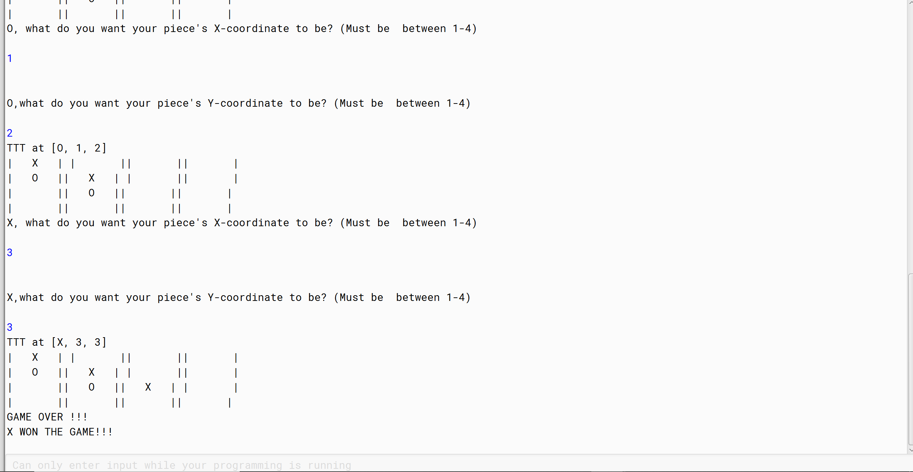
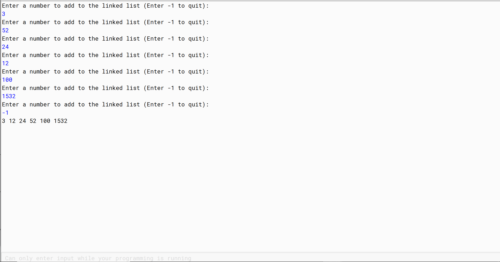

Family Tree
this program accepts a predetermined 2D Array of people (with their respective relations to one another) and will build a dynamic linked list that retains these connections
Custom Tic-Tac-Toe

an optimized version of Tic-Tac-Toe that gives the user more freedom in customizing its parameters and rules
Bucket Sort with Linked Lists

this program uses the Bucket Sort algorithim to sort an array of integer but uses linked-lists to best optimize the space it uses